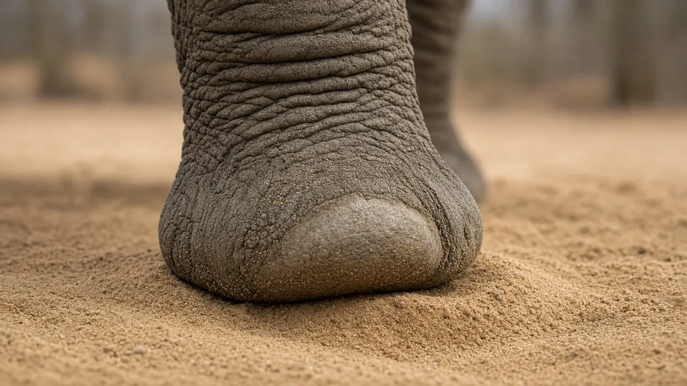

How many toes and toenails do elephants have?
Every elephant has five toes in the bones of each foot, but not every toe shows a toenail on the outside. African forest and Asian elephants usually have five nails on each front foot and four on each back foot, while African savanna elephants usually have fewer.

Five toes, but fewer toenails
Elephant Aid International says all elephants have five toes in the skeleton of the foot, but the number of visible toenails varies. It gives the African forest elephant and the Asian elephant five nails on the front feet and four on the back feet, and the African savanna elephant four, or sometimes five, on the front feet and three on the back.
Counts vary between individuals. A fact sheet from the International Environment Library Consortium gives savanna elephants 4 to 5 nails on the front feet and 3 to 5 on the hind feet, and forest elephants 5 on the front and 4 to 5 on the hind. It also reports a study of three East African populations in which 5 front and 4 hind nails was the most common pattern. So the numbers above are typical, not fixed.
Why elephants walk on tiptoe
Both sources say elephants walk on tiptoe, with the toe bones angled downward rather than lying flat. Elephant Aid International compares the arrangement to the feet of dogs and cats, with weight carried through the toes. Behind and beneath the toe bones sits a thick, fibrous, fatty pad.
That pad spreads the elephant's weight over a large surface, absorbs shock when the foot lands and, according to Elephant Aid International, helps elephants move quietly. The pad expands as the foot is put down. Our article on why elephants can walk so quietly goes into more detail.
The "sixth toe"
Elephant Aid International also describes cartilage structures, sometimes called predigits or sixth toes, that brace the fatty cushion and help distribute weight. They are not true toes with nails, which is why an elephant can have five toes but only three, four or five nails.
More than a cushion
The International Environment Library Consortium notes that the large wedge shaped fat pads absorb shock and likely help with sensory signals such as vibrations and pressure. The soles also have ridges that give traction on slippery or uneven ground, according to Elephant Aid International. Footpads and nails keep growing throughout an elephant's life.
Why foot health matters
Elephant Aid International calls foot health a serious issue for elephants in captivity, saying that inactivity and long periods standing or walking on hard surfaces such as concrete can cause thin, uneven, bruised pads and cracked nails, which can lead to infection. If you are choosing where to see elephants, our elephant sanctuary checklist includes questions about ground surfaces and foot care.
Frequently asked questions
How many toes does an elephant have?
Five in each foot, in the skeleton. Not all five have a visible nail.
How many toenails do Asian elephants have?
Elephant Aid International gives five on each front foot and four on each back foot.
How many toenails do African savanna elephants have?
Usually four, sometimes five, on each front foot and about three on each back foot, according to Elephant Aid International. Counts vary between individuals.
Do elephants really walk on tiptoe?
Yes. Their toe bones angle downward and a thick fatty pad sits behind and beneath them.
Do elephant toenails keep growing?
Elephant Aid International says footpads and nails continue to grow throughout an elephant's lifetime.
Sources
Cite this page
APA
TuskWise. (2026, November 13). How many toes and toenails do elephants have? https://tuskwise.com/blog/how-many-toes-and-toenails-do-elephants-have.html
MLA
“How many toes and toenails do elephants have?” TuskWise, 13 Nov. 2026, tuskwise.com/blog/how-many-toes-and-toenails-do-elephants-have.html.
Chicago
TuskWise. “How many toes and toenails do elephants have?” TuskWise. Last modified November 13, 2026. https://tuskwise.com/blog/how-many-toes-and-toenails-do-elephants-have.html.